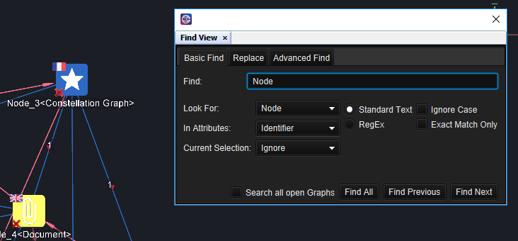
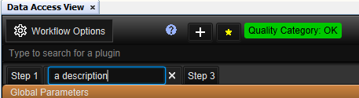
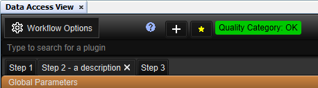
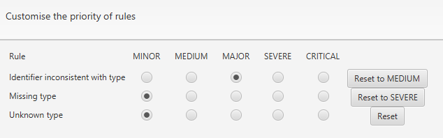
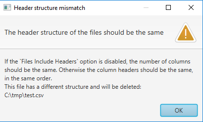
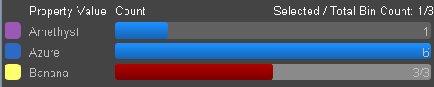

What's new in Constellation v2.6
Here is a list of changes we've added to this version of Constellation v2.6 which are also included in Constellation Cyber v1.5.
New Find View
2.6 introduces a fresh new version of the Find View which can be found under Experimental -> Views -> Find, or Ctrl-B for those who like keyboard shortcuts. This comes with all your favourite features from the old version but also has fresh new features as well:
- You can now view or replace one result at a time via the Find Previous and Find/Replace Next buttons. You can still also apply to all results at once if desired.
- Instead of the search being applied to just the current graph, you can now choose to optionally apply your search to all open graphs.
- On top of adding the results to the current selection, you also have the option to remove the results from the current selection or narrow the search scope to just the current selection.
The most notable difference compared to the previous version is that this is a JavaFX implementation of the view which means it will have a similar look and feel to most of the other views available in Constellation. It is also undocked by default to make it similar to other applications with a find functionality. The intention is that this new version will eventually replace the old version of the Find View in a future release.
Named Data Access View Step Tabs
A description can now be added to the Step tabs located in the Data Access View. This is helpful for identifying the intended purpose of a step. To add a description, simply double-click on the tab you want to edit, type in your description, and then press Enter (or click out of the tab) to set it. Descriptions are also saved with templates so when you load a template, you will get all the existing descriptions with it.
 Quality Control View Improvement
A helpful improvement has been made to the Quality Control View Category Priority window. When you open the window, if any of the rules have had their severity changed to a level other than the default, the Reset button for that rule will specify the default severity which that rule will be reset to. Note that this change only occurs on loading the window so you won’t see the label on the reset button change while you are changing the severities.
File Importer Improvement
A number of useful updates have been made to the File Importer to better handle importing multiple files at the same time. In previous versions, the only restriction on importing multiple files was that the files had to be of the same type (e.g. csv, excel, etc). While only one of the files would display in the preview at any given time, the mapping specified would get applied to all the files added to the list. This caused issues then if the structure of each file was different (e.g. had a different numbers of columns). This issue has been rectified in this release.
When you try add a second file to the file list, if the file you try to add has a different number of columns to first file or has different column headers (if 'Files Include Headers' is selected), a popup will be displayed indicating a mismatch and that file won’t be added to the list. This means you can only import multiple files at the same time if all files have the same column structure.
Histogram Selected Bins Count
The Histogram View has also received an update. On top of displaying the total number of bins, the Histogram will now also specify how many of those bins are selected. This makes it easier to analyse the data in your graph when filters are applied.
Want to know more?
You can find out more information about the latest updates on the What's new page once you have installed version 2.6. There's loads of extra details available in the Release Notes and Change Log.
Would you like to learn more about how Constellation works?
There is a training package available on GitHub to learn how to make the most use of the various features in Constellation. There is also developer training for those seeking to deep dive into the underlying source code.
Contact Us
Do you have any feedback or suggestions for improvement? Have a comment on the new Find View? Noticed a bug? You can log an issue via the Help menu or clicking here.